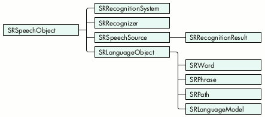

As any Star Trek fan knows, the computer of the future will talk
and listen. Macintosh computers have already been talking for a
decade, using speech synthesis technologies such as MacinTalk or
the Speech Synthesis Manager. Now any Power Macintosh
application can use Apple's new Speech Recognition Manager to
recognize and respond to spoken commands as well. We'll show you
how easy it is to add speech recognition to your application.
Speech recognition technology has improved significantly in the last few years. It may
still be a long while before you'll be able to carry on arbitrary conversations with
your computer. But if you understand the capabilities and limitations of the new
Speech Recognition Manager, you'll find it easy to create speech recognition
applications that are fast, accurate, and robust.
With code samples from a simple speech recognition application, SRSample, this
article shows you how to quickly get started using the Speech Recognition Manager.
You'll also get some tips on how to make your application's use of speech recognition
compelling, intuitive, and reliable. For everything you need in order to use the Speech
Recognition Manager in your application (including SRSample and detailed
documentation), see this issue's CD or Apple's speech technology Web site.
The Speech Recognition Manager consists of an API and a recognition engine. Under
System 7.5, these are packaged together in version 1.5 or later of the Speech
Recognition extension. (This packaging may change in future OS versions.)
The Speech Recognition Manager runs only on Power Macintosh computers with
16-bit sound input. Speech recognition is simply too computation-intensive to run
well on most 680x0 systems. The installed base of Power Macs is growing by about
five million a year, however, so plenty of machines -- including the latest
PowerPC(TM) processor-based PowerBooks -- can run speech recognition.
The current version of the Speech Recognition Manager has the following capabilities
and limitations:
To use the Speech Recognition Manager, you must first open a recognition system,
which loads and initializes the recognition toolbox. You then allocate a recognizer,
which listens to a speech source for sound input. A recognizer might also display a
feedback window that shows the user when to speak and what the recognizer thinks was
said.
To define the spoken utterances that the recognizer should listen for, you build a
language model and pass it to the recognizer. A language model is a flexible network of
words and phrases that defines a large number of possible utterances in a compact and
efficient way. The Speech Recognition Manager lets your application rapidly change the
active language model, so that at different times your application can listen for
different things.
After the recognizer is told to start listening, it sends your application a recognition
result whenever it hears the user speak an utterance contained in the current language
model. A recognition result contains the part of the language model that was recognized
and is typically sent to your application via Apple events. (Alternatively, you can
request notification using callbacks if you cannot support Apple events.) Your
application then processes the recognition result to examine what the user said and
responds appropriately.
Figure 1 shows how the Speech Recognition Manager works. Note that the telephone
speech source is not supported in version 1.5 of the Speech Recognition extension.
Figure 1. How the Speech Recognition Manager works
SPEECH OBJECTS
The recognition system, recognizer, speech source, language models, and recognition
results are all objects belonging to classes derived from the SRSpeechObject class, in
accordance with object-oriented design principles. These and other objects are
arranged into the class hierarchy shown in Figure 2. The class hierarchy gives the
Speech Recognition Manager API the flexibility of polymorphism. For example, you
can call the routine SRReleaseObject to dispose of any SRSpeechObject.

Figure 2. The speech object class hierarchy
The most important speech objects are as follows:
Each class of speech object has a number of properties that define how the objects
behave. For example, all descendants of SRLanguageObject have a kSRSpelling property
that shows how they're spelled. Your application uses the SRSetProperty and
SRGetProperty routines to set and get the various properties of each these objects.
RELEASING OBJECT REFERENCES
You create objects by calling routines like SRNewRecognizer and SRNewWord. When
you've finished using them, you dispose of them by calling SRReleaseObject. You can
also acquire references to existing objects by calling routines like SRGetIndexedItem
(for example, to get the second word in a phrase of several words). The Speech
Recognition Manager maintains a reference count for each object. An object's reference
count is incremented by SRNew... and SRGet... calls, and is decremented by calls to
SRReleaseObject. An object gets disposed of only when its reference count is
decremented to 0. Thus, to avoid memory leaks, your application must balance every
SRNew... or SRGet... call with a call to SRReleaseObject.
It's easy to add simple speech recognition capabilities to your application. All you need
to do is perform a small number of operations in sequence:
We'll describe each of these operations in more detail.
INITIALIZING SPEECH RECOGNITION
First, you must verify that a valid version of the Speech Recognition Manager is
installed on the target machine. Listing 1 shows how to do this. Note that only versions
1.5 and later of the Speech Recognition Manager adhere to the API used in this article.
______________________________
Listing 1. Determining the Speech Recognition Manager version
Boolean HasValidSpeechRecognitionVersion (void)
{
OSErr status;
long theVersion;
Boolean validVersion = false;
const unsigned long kMinimumRequiredSRMVersion = 0x00000150;
status = Gestalt(gestaltSpeechRecognitionVersion, &theVersion);
if (!status)
if (theVersion >= kMinimumRequiredSRMVersion)
validVersion = true;
return validVersion;
}
______________________________
Listing 2. Initializing the Speech Recognition Manager
/* Our global variables */
SRRecognitionSystem gRecognitionSystem = NULL;
SRRecognizer gRecognizer = NULL;
SRLanguageModel gTopLanguageModel = NULL;
AEEventHandlerUPP gAERoutineDescriptor = NULL;
OSErr InitSpeechRecognition (void)
{
OSErr status = kBadSRMVersion;
/* Ensure that the Speech Recognition Manager is available. */
if (HasValidSpeechRecognitionVersion()) {
/* Open the default recognition system. */
status = SROpenRecognitionSystem(&gRecognitionSystem,
kSRDefaultRecognitionSystemID);
/* Use standard feedback window and listening modes. */
if (!status) {
short feedbackNeeded = kSRHasFeedbackHasListenModes;
status = SRSetProperty(gRecognitionSystem,
kSRFeedbackAndListeningModes, &feedbackNeeded,
sizeof(feedbackNeeded));
}
/* Create a new recognizer. */
if (!status)
status = SRNewRecognizer(gRecognitionSystem, &gRecognizer,
kSRDefaultSpeechSource);
/* Install our Apple event handler for recognition results. */
if (!status) {
status = memFullErr;
gAERoutineDescriptor =
NewAEEventHandlerProc(HandleRecognitionDoneAE);
if (gAERoutineDescriptor)
status = AEInstallEventHandler(kAESpeechSuite,
kAESpeechDone, gAERoutineDescriptor, 0,
false);
}
}
return status;
}
______________________________
Listing 2 shows how to open an SRRecognitionSystem, allocate an SRRecognizer, and
install your Apple event handler. All of this happens when your application starts up.
The Apple event handler HandleRecognitionDoneAE is shown later (in Listing 4).
Notice in Listing 2 how we call SRSetProperty to request Apple's standard feedback and
listening modes for the recognizer. To have a successful experience with speech
recognition, users need good feedback indicating when the recognizer is ready for them
to talk and what utterances the recognizer has recognized (for more on giving
feedback, see "Speech Recognition Tips"). In addition, because of the recognizer's
tendency to misinterpret background conversation and noises as speech, it's usually a
good idea to let the user tell the recognizer when to listen by pressing a predefined key
(the "push-to-talk" key). Your application can get all of this important behavior for
free, simply by setting the kSRFeedbackAndListeningModes property.
______________________________
Speech recognition is a completely new input mode, and using it properly isn't
always as straightforward as it might seem. While we don't yet have a
complete set of human interface guidelines to guarantee a consistent and
intuitive speech recognition user experience, there are a few simple rules
that all speech recognition applications should follow.
GIVE FEEDBACK
Your application must always provide feedback to let users know when they
can speak, when their utterance has been recognized, and how it was
interpreted. The feedback services in the Speech Recognition Manager perform
this for you, using the standard feedback window shown in Figure 3. (The
user's recognized utterances are shown in italics, and the displayed feedback is
in plain text. The string under the feedback character's face indicates the
push-to-talk key.) All you need to do is set the
kSRFeedbackAndListeningModes property as shown in Listing 2.
Figure 3. Standard feedback window
Your application should use this standard feedback behavior unless you have a
very good reason to provide your own feedback and custom push-to-talk
options. (Fast action games that take over the entire screen and don't call
WaitNextEvent are examples of applications that wouldn't use the standard
feedback.) Not only will users enjoy the benefits of consistent behavior, but as
Apple improves the feedback components, your speech recognition applications
will automatically inherit this improved behavior without having to be
recompiled.
SHOW WHAT CAN BE SAID
Successful speech recognition applications always let the user know what he
or she can say. The way they achieve this depends on the application, but one
good example is a Web browser that makes all visible hyperlinks speakable.
This lets the user know what can be said while restricting the size of the
language model to improve recognition accuracy.
CONSTRAIN THE LANGUAGE MODEL
The recognition technology currently used by the Speech Recognition Manager
works best when it's listening for a small number of distinct utterances. The
longer an utterance is, the more easily it can be distinguished from other
utterances. For example, distinguishing the isolated words hot, cut, and quit is
difficult and error prone. Recognition performance also decreases as the
language model grows. The larger the language model, the more time the
recognizer must spend searching for a matching utterance and the larger the
likelihood of two utterances in the language model sounding similar. For best
results, limit the size of the language model to fewer than a hundred phrases at
any time and avoid including phrases that are easily confused when spoken,
like "wreck a nice beach" and "recognize speech."
DO SOMETHING DIFFERENT
Compelling applications of speech recognition are often novel ones. Instead of
simply paralleling an application's graphical user interface with a spoken one
(making all menu items speakable, for example), do something different --
something that takes advantage of the unique properties of speech. Combine
speech synthesis with speech recognition to engage the user in a brief dialog.
Use efficient language models to allow a single utterance to trigger a series of
commands that might otherwise require interaction with dialog boxes. Let the
power of speech recognition augment the graphical interface your users are
already familiar with. Use your imagination!
______________________________
With Apple's Speech control panel (which comes bundled on new Macintoshes and with
system updates), users can tailor this behavior to suit their needs, choosing preferred
feedback characters (that is, the cartoon faces displayed in the feedback window) and
preferred push-to-talk keys.
BUILDING A SIMPLE LANGUAGE MODEL
Your application needs to build a language model -- gTopLanguageModel in our sample
code -- that specifies what the recognizer is listening for. The routine in Listing 3
shows how your application can create a simple language model. (We'll discuss fancier
language models later in this article.) Even simple language models should avoid using
phrases that sound similar to one another; just like a human listener, the recognizer
may have a hard time distinguishing between similar-sounding phrases.
______________________________
Listing 3. Building a simple language model
OSErr BuildLanguageModel (void)
{
OSErr status;
const char kLMName[] = "<Top LM>";
/* First, allocate the gTopLanguageModel language model. */
status = SRNewLanguageModel(gRecognitionSystem,
&gTopLanguageModel, kLMName, strlen(kLMName));
if (!status) {
long refcon = kTopLMRefcon;
/* Set the reference constant of our top language model so */
/* that when we process our recognition result, we'll be */
/* able to distinguish it from the rejection word, "???". */
status = SRSetProperty(gTopLanguageModel, kSRRefCon, &refcon,
sizeof(refcon));
if (!status) {
const char *kSimpleStr[] = { "Hello", "Goodbye",
"What time is it?", NULL };
char **currentStr = (char **) kSimpleStr;
long refcon = kHelloRefCon;
/* Add each of the strings in kSimpleStr to the language */
/* model, and set the refcon to the index of the string */
/* in the kSimpleStr array. */
while (*currentStr && !status) {
status = SRAddText(gTopLanguageModel, *currentStr,
strlen(*currentStr), refcon++);
++currentStr;
}
/* Augment this simple language model with a fancier one. */
if (!status)
status = AddFancierLanguageModel(gTopLanguageModel);
}
}
return status;
}
______________________________
A recognizer returns a special speech object, called the rejection word, if it hears an
utterance but cannot recognize it. Listing 3 sets the reference constant of the top-level
language model to a predefined value to be able to distinguish that model from the
rejection word.
Note in Listing 3 that we add the phrases "Hello," "Goodbye," and "What time is it?" to
our gTopLanguageModel using the call SRAddText, a convenient shortcut for the
sequence of calls SRNewPhrase, SRAddLanguageObject, and SRReleaseObject. SRAddText
also sets the kSRRefCon property of each added phrase. We'll use this reference
constant when we examine the recognition result to help determine what was said.
HANDLING RECOGNITION RESULT NOTIFICATIONS
Now let's look at how your application would process result notifications given this
simple language model. In Listing 4, HandleRecognitionDoneAE, our Apple event
handler, uses the routine AEGetParamPtr to extract the status of the result as well as
the recognizer and recognition result objects from the Apple event.
______________________________
Listing 4. Handling the recognition-done Apple event
pascal OSErr HandleRecognitionDoneAE (AppleEvent *theAEevt,
AppleEvent *reply, long refcon)
{
OSErr recognitionStatus = 0, status;
long actualSize;
DescType actualType;
/* Get recognition result status. */
status = AEGetParamPtr(theAEevt, keySRSpeechStatus,
typeShortInteger, &actualType,
(Ptr) &recognitionStatus, sizeof(recognitionStatus),
&actualSize);
/* Get the SRRecognizer. */
if (!status && !recognitionStatus) {
SRRecognizer recognizer;
status = AEGetParamPtr(theAEevt, keySRRecognizer,
typeSRRecognizer, &actualType,
(Ptr) &recognizer, sizeof(recognizer),
&actualSize);
/* Get the SRRecognitionResult. */
if (!status) {
SRRecognitionResult recResult;
status = AEGetParamPtr(theAEevt, keySRSpeechResult,
typeSRSpeechResult, &actualType,
(Ptr) &recResult, sizeof(recResult),
&actualSize);
/* Extract the language model from the result. */
if (!status) {
SRLanguageModel resultLM;
long propertySize = sizeof(resultLM);
status = SRGetProperty(recResult, kSRLanguageModelFormat,
&resultLM, &propertySize);
/* Process the language model. */
if (!status) {
status = ProcessRecognitionResult(resultLM,
recognizer);
/* What we SRGot we must SRRelease! */
SRReleaseObject(resultLM);
}
/* Also release the recognition result. */
SRReleaseObject(recResult);
}
}
}
return noErr;
}
______________________________
At this point, the Apple event handler could easily get the text of what was heard by
getting the kSRTEXTFormat property of the recognition result. But a more useful form
of the result is the kSRLanguageModelFormat. This language model parallels the
language model gTopLanguageModel, but instead of containing all of the phrases "Hello,"
"Goodbye," and "What time is it?" it contains only a copy of the phrase that was
recognized. For example, if the user said "Goodbye," the language model returned in the
kSRLanguageModelFormat property would contain one phrase, which would have a
kSRSpelling property of "Goodbye" and a kSRRefCon property of 1 (the value passed
for that phrase in the SRAddText call in Listing 3). The ProcessRecognitionResult
routine (Listing 5) uses the language model to determine what was said by getting the
kSRRefCon property of the spoken phrase and responding appropriately.
______________________________
Listing 5. Processing a recognition result
OSErr ProcessRecognitionResult (SRLanguageModel resultLM,
SRRecognizer recognizer)
{
OSErr status = noErr;
if (resultLM && recognizer) {
long refcon;
long propertySize = sizeof(refcon);
/* Get the refcon of the root object */
status = SRGetProperty(resultLM, kSRRefCon, &refcon,
&propertySize);
/* Is the resultLM a subset of our top language model or is */
/* it the rejection word, "???"? */
if (!status && refcon == kTopLMRefcon) {
SRLanguageObject languageObject;
propertySize = sizeof(languageObject);
/* The resultLM contains either an SRPhrase or an SRPath. */
/* We use the refcon property set in our language model */
/* building routine to distinguish between the results. */
/* Get the phrase or path. */
status = SRGetIndexedItem(resultLM, &languageObject, 0);
if (!status) {
long refcon;
propertySize = sizeof(refcon);
/* Get the refcon of the language object. */
status = SRGetProperty(languageObject, kSRRefCon,
&refcon, &propertySize);
if (!status) switch (refcon) {
case kHelloRefCon:
case kGoodbyeRefCon:
case kWhatTimeIsItRefCon:
{
const char *kResponses[] =
{"Hi there!", "Don't leave now!",
"It's time to use the Speech Recognition Manager!"
};
/* Speak and display our response using the */
/* feedback character. Use the refcon as an */
/* index into our response array. */
status = SRSpeakAndDrawText(recognizer,
kResponses[refcon],
strlen(kResponses[refcon]));
}
break;
case kCompanyRefCon:
status = ProcessFancierLanguageModel
(languageObject, recognizer);
break;
}
/* Always SRRelease what we SRGot. */
status = SRReleaseObject(languageObject);
}
}
}
return status;
}
______________________________
This example uses the SRSpeakAndDrawText routine to respond to recognition events.
The Speech Recognition Manager uses the Speech Synthesis Manager to speak the
string, and the animated feedback character (displayed in Apple's standard feedback
window) lip-synchs with the synthesized text. The Speech Recognition Manager also
displays the response text in the feedback window. (You can use other routines to
simply speak a string through the feedback window without displaying it, or to display
a string without speaking it.)
SETTING THE ACTIVE LANGUAGE MODEL AND STARTING TO LISTEN
All we need to do now is make the language model we've built, gTopLanguageModel, the
active language model and tell our recognizer to start listening. First we call the
SRSetLanguageModel function, which associates gTopLanguageModel with the
SRRecognizer we've allocated, gRecognizer:
OSErr status = SRSetLanguageModel(gRecognizer, gTopLanguageModel);
You can build as many language models as you like, but there is always just one that's
active. You can make another language model active (and thereby deactivate the one that
was previously active), or you can enable and disable parts of the active language
model. Typically this is done in response to a speech-detected Apple event, sent to the
application when recognition is about to begin.
For a good example of making your language model dynamically conform to
the context of your application, see the article "Adding Speech Recognition to
an Application Framework" in this issue of develop.*
Once we've set the active language model, we start the recognition process by calling
SRStartListening, as follows:
if (!status) status = SRStartListening(gRecognizer);
Now we can start speaking to our application. When an utterance is recognized as
belonging to our language model, our Apple event handler, HandleRecognitionDoneAE,
will be called and the recognition result will be processed. It's that easy!
CLEANING UP
Listing 6 shows how to clean up when your application quits. In general, you should
release the speech objects in the order shown.
______________________________
Listing 6. Terminating speech recognition
void TerminateSpeechRecognition (void)
{
OSErr status = noErr;
/* If we have an active language model, release it. */
if (gTopLanguageModel) {
status = SRReleaseObject(gTopLanguageModel);
gTopLanguageModel = NULL;
}
/* If we have a recognizer, release it. */
if (gRecognizer) {
status = SRStopListening(gRecognizer);
status = SRReleaseObject(gRecognizer);
gRecognizer = NULL;
}
/* If we have a recognition system, close it. */
if (gRecognitionSystem) {
status = SRCloseRecognitionSystem(gRecognitionSystem);
gRecognitionSystem = NULL;
}
/* Remove our Apple event handler and dispose of the handler's */
/* routine descriptor. */
if (gAERoutineDescriptor) {
status = AERemoveEventHandler(kAESpeechSuite, kAESpeechDone,
gAERoutineDescriptor, false);
DisposeRoutineDescriptor(gAERoutineDescriptor);
gAERoutineDescriptor = NULL;
}
}
______________________________
The Speech Recognition Manager provides several routines that your application can
use to create and manipulate fancier language models than the one created earlier in
Listing 3. For example, suppose you wanted to create an application that responds to
users when they say, "Tell me the price of <company> stock," where <company> is one
of several company names.
To create a language model like this, your application needs to create an SRPath object
that consists of the phrase "Tell me the price of" followed by an embedded language
model representing the company names, followed by the word "stock." The
AddFancierLanguageModel function creates this path and adds it to the language model
created in Listing 3. (Note that the embedded company language model is simply a list
of phrases, just like the language model we created in Listing 3.)
Figure 4 shows the structure of the entire language model. We've limited the number
of companies to three here for simplicity. The top half of each box shows the spelling
and refcon properties of each object; the lower half indicates the object type.
Figure 4. Language model built by calling BuildLanguageModel
Take a look at the AddFancierLanguageModel function (not shown, but included with our
sample code) to see how to build the fancier language model. (Don't worry if this
routine seems like a lot of code just to add the command "Tell me the price of
<company> stock"; below we'll describe the SRLanguageModeler tool, which makes the
creation of complicated static language models very easy.) Listing 7 shows how your
application would process results given this fancier language model.
______________________________
Listing 7. Processing a recognition result given a fancier language model
OSErr ProcessFancierLanguageModel (SRPath resultPath,
SRRecognizer recognizer)
{
OSErr status = noErr;
if (resultPath && recognizer) {
SRLanguageModel companyLM;
/* Get the second item in the path -- it's the company */
/* language model. */
status = SRGetIndexedItem(resultPath, &companyLM, 1);
if (!status && companyLM) {
SRPhrase companyName;
/* In the result language model, the company language */
/* model contains just one phrase. */
status = SRGetIndexedItem(companyLM, &companyName, 0);
if (!status) {
long refcon;
long propertySize = sizeof(refcon);
/* Get the refcon from the company name. It's our */
/* index into the response array. */
status = SRGetProperty(companyName, kSRRefCon, &refcon,
&propertySize);
if (!status) {
const char *kResponses[] =
{ "Apple stock is priced to move!",
"Netscape is trading at fifty dollars.",
"Why would you want to know that?"
};
status = SRSpeakAndDrawText(recognizer,
kResponses[refcon],
strlen(kResponses[refcon]));
}
/* What we SRGot we must SRRelease. */
status = SRReleaseObject(companyName);
}
status = SRReleaseObject(companyLM);
}
}
return status;
}
______________________________
Speech recognition applications that support utterances like "Tell me the price of
<company> stock" or "Call <name>," while limiting <company> or <name> to a few dozen
items, can be more compelling than those that just respond to simple phrases. They're
nicely limited in scope, yet they allow the user to invoke actions more easily than
would be possible with a graphical user interface. What other technology does that?
The Speech Recognition Manager contains several more routines and properties for
manipulating language models. We'll look at a few of them here. Your application can
create a large language model and then use the SRSetProperty function to disable and
enable parts of it quickly on the fly, as shown in Listing 8. By enabling only parts of a
language model, you can minimize the number of utterances that the recognizer is
listening for.
______________________________
Listing 8. Disabling a part of a language model
/* Disable the stockPath part of the gTopLanguageModel. */
/* The stock path is the fourth item in this language model. */
SRPath stockPath;
OSErr status = SRGetIndexedItem(gTopLanguageModel, &stockPath, 3);
if (!status) {
Boolean enabled = false;
status = SRSetProperty(stockPath, kSREnabled, &enabled,
sizeof(enabled));
/* Balance SRGet call. */
status = SRReleaseObject(stockPath);
}
______________________________
Your application can change, clear, or rebuild parts of a language model dynamically to
reflect the current context of your program. Listing 9 clears and then rebuilds the
company language model that was originally built by the AddFancierLanguageModel
function.
______________________________
Listing 9. Emptying and refilling the company language model
/* Empty and refill the embedded company language model. */
/* Assume that stockPath has already been initialized. */
/* The companyLM is the second item in the stock path. */
SRLanguageModel companyLM;
OSErr status = SRGetIndexedItem(stockPath, &companyLM, 1);
if (!status) {
/* This releases each phrase in the company language model. */
status = SREmptyLanguageObject(companyLM);
/* Now rebuild the company language model with new companies. */
if (!status) {
const char *kNewCompanies[] = { "I B M", "Motorola",
"Coca-Cola", NULL };
char **company = (char **) kNewCompanies;
long refcon = 0;
while (*company && !status) {
status = SRAddText(companyLM, *company, strlen(*company),
refcon++);
++company;
}
}
SRReleaseObject(companyLM);
}
______________________________
At any given moment, the active language model should be relatively small, but your
application can change the set of active phrases at any time. For example, if a Web
browser application made its links speakable, at any given moment there would only
be a few dozen visible links, so there would only be a few dozen phrases active. But if
you spent a couple of hours surfing the Web with that browser, you would have seen
many thousands of links throughout the session, and you could have spoken any one of
them while it was visible.
In addition to enabling and disabling parts of your language model, the SRSetProperty
function allows your application to make words, phrases, paths, or language models
repeatable (so that the user can say that item one or more times in a row) or
rejectable (so that if the user says something else for that item, the recognizer will
fill it in with a special rejection word with a spelling of "???").
Your application can also make any word, phrase, path, or language model optional by
setting the corresponding object's kSROptional property to true. In
AddFancierLanguageModel, we've set the kSROptional property of the SRWord "stock"
to true, so the recognizer is ready for the user to say, "Tell me the price of Apple" as
well as "Tell me the price of Apple stock."
Your application doesn't have to build language models from scratch each time it runs.
The Speech Recognition Manager provides routines for saving and loading language
objects (for example, the SRPutLanguageObjectIntoHandle and
SRNewLanguageObjectFromDataFile routines). Listing 10 shows an example.
______________________________
Listing 10. Saving a language model into a resource
/* Allocate a handle of size 0 to store our language model in; */
/* SRPutLanguageObjectIntoHandle will resize it as needed. */
Handle lmHandle = NewHandle(0);
OSErr status = MemError();
if (!status) {
status = SRPutLanguageObjectIntoHandle
(gTopLanguageModel, lmHandle);
if (!status) {
/* Save the language model as a resource in the current */
/* resource file. Pick a reasonable resource type and ID. */
AddResource(lmHandle, 'LMDL', 100, "\pTop Language Model");
/* Make sure it gets written to disk. */
if (!(status = ResError())) {
WriteResource(lmHandle);
DetachResource(lmHandle);
}
}
DisposeHandle(lmHandle);
}
______________________________
Apple provides a very handy developer tool, called SRLanguageModeler, that you can
use to quickly create, test, and save language models into resources or data files. You
can find this tool, and documentation for it, with the other Speech Recognition Manager
developer information on this issue's CD and on the speech technology Web site.
SRLanguageModeler lets you write out a language model in a relatively simple text
form and then try it out to see how well its phrases can be recognized and
discriminated from one another. It lets you save the language models into a binary
resource or file format that you can ship with your application. Your application can
load the language model at run time with SRNewLanguageObjectFromHandle or
SRNewLanguageObjectFromDataFile. SRLanguageModeler will eliminate a lot of the
code you would otherwise have to write to construct the static parts of your language
models.
If you've understood this article, you'll have no problem making practical use of
speech recognition in your application. From the basics of checking for the proper
version of the Speech Recognition Manager to some of the finer details of building
language models, we've shown you everything you need to know to get started. Be sure
to take a look at the SRSample application, which uses many of the listings in this
article. To dig even deeper, check out the Speech Recognition Manager documentation
and the SRLanguageModeler tool. For tips on using the Speech Recognition Manager
within an application framework and dynamically changing your language model, see
the article "Adding Speech Recognition to an Application Framework" in this issue of
develop. Then have fun turning your application into a good listener.
RELATED READING
MATT PALLAKOFF (mattp@apple.com), Apple's Speech Recognition engineering
manager, likes to talk to inanimate objects. He has spent the last several years helping
Apple's speech group pull speech recognition technology kicking and screaming over a
threshold of usability that (as of PlainTalk 1.4) finally allows Power Macintosh users
to leave speech recognition on and use it in simple ways every day. He denies ever
having worked in the field of Artificial Intelligence.*
ARLO REEVES (arlo@apple.com) has had a varied employment history that includes
baby-sitting young Peregrine falcons in Yosemite, studying variable stars from
Nantucket, and adding two-dimensional FFT capabilities to NIH Image. Lately he's been
helping Matt and the speech team at Apple bring the Speech Recognition Manager into
existence. Arlo lives in Santa Cruz, California, where he enjoys spending his free time
out of doors with his friends.*
Thanks to our technical reviewers Mike Dilts, Eric "Braz" Ford, Tim Monroe, and
Guillermo Ortiz.*